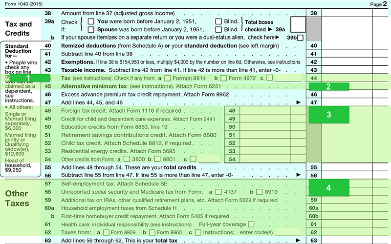

The "regular" tax responsibility, along with extra taxes, is calculated in the last section of the tax return. There are some key issues to note in this section. Click each numbered area to learn more.
